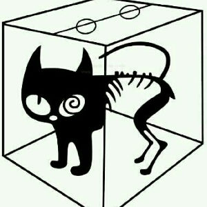

罗小黑战记
Summer丶小白丨
一口气看完的巅疯之作，想着28集啥时候更新，然后翻了下简介，啪哒一声手机掉到地上，一个是感叹这么好的作品11年就出了，一个是震惊8年才更27集，希望我有生之年能追完（｡ò ∀ ó｡）

薛定谔家的喵大人
每一次更新播放量都会激增，为什么呢？因为大家都会选择从头再来一遍，也不一定是因为热爱，主要是前边剧情都忘了
xi1t_6b1
人物的塑造；出戏但是不突兀的吐槽，最喜欢的轻生活下剧情慢慢展开，平淡的日常高潮的喷发极富节奏感的剧集一旦进去了就出不来了；完整而且很有新意有国漫特色的设定（+大电影+漫画）；在关键剧情时不拖泥带水，打斗流畅真心过瘾而且不同于一下一个慢镜头一下一个时停喊个技能，全程的打斗拳拳到肉颇有武侠电影中一连串交手后酣畅淋漓的感觉…总之太难得了我爱罗小黑